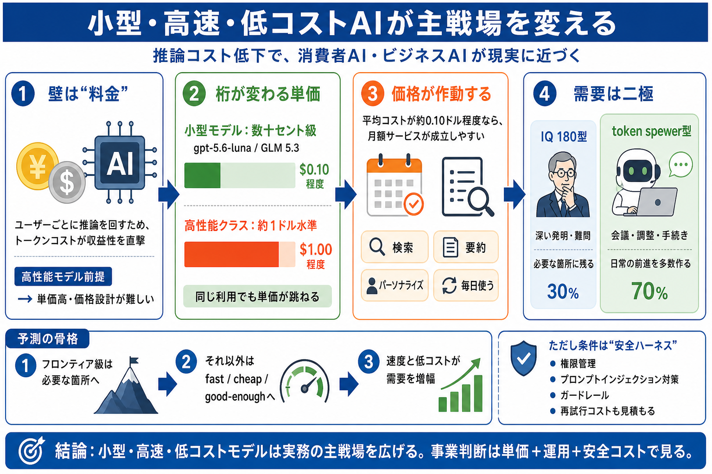

GLM-5.3 vs GPT-5.6 Luna Pricing | AnotherWrapper
As of August 27, 2026, GPT-5.6 Luna is 76% cheaper on blended LLM API pricing. GPT-5.6 Luna costs $0.20 per million inpu…

推論（inference）のトークンコストが下がり、小型モデルが“十分”に届いたことで、消費者AIもビジネスAIも現実味が一気に増している。
AIはユーザーごとに推論を回すため、1回あたりのトークンコストが収益性を直撃する。高性能モデル前提だと単価が上がり、価格設計が難しくなる。
著者はgpt-5.6-lunaを数週間試し、「能力が高い／速い」ことを述べる。さらに重要なのは、APIコストが負荷の高いタスクでも数十セント級に収まる場面がある点だ。
トークンコストが下がると、消費者向けAIの価格帯（例：月額30ドル）の成立が近づく。特に検索・要約・パーソナライズを“毎日”行うサービスほど影響が大きい。
小型モデルにより、平均コストが約0.10ドル程度まで下がり得る、という見立てが提示される。これがWSJやThe Economist級の価値提供に“届く可能性”につながる。
ビジネスでは「IQ 180型（深い発明）」より「token spewer型（会議・調整・手続きを回す）」が大きい可能性が示される。前進の“積み上げ”が日常の大半を占める。
fast/cheap/good-enough は“モデル単体”では成立しない。プロンプトインジェクション対策や、ロール・権限などの統制（ハーネス）が必要になる。
小型・高速・低コストモデルは、実務の主戦場を広げる。投資や事業判断では、単価だけでなく運用・安全・再試行コストまで見積もる必要がある。
As of August 27, 2026, GPT-5.6 Luna is 76% cheaper on blended LLM API pricing. GPT-5.6 Luna costs $0.20 per million inpu…
GPT 5.6 Luna is priced at $0.200 per million input tokens and $1.20 per million output tokens. It has a context window o…
OpenRouter OpenRouter OpenRouter OpenRouter ### Product ### Company ### Developer ### Connect # ## GLM 5.3 vs GPT…
Only GPT-5.6 Luna specifies input context (1,050,000 tokens). Only GPT-5.6 Luna specifies output context (128,000 tokens…
Starting July 30, API pricing is $2 per million input tokens and $12 per million output tokens for Terra, and $0.20 per …